Hồ sơ người chơi
Hồ sơ gồm bốn thứ trang trí độc lập: ảnh đại diện, khung viền, kiểu chữ tên, và huy hiệu (token).
Mô tả
- Hồ sơ gồm bốn thứ trang trí độc lập: ảnh đại diện, khung viền, kiểu chữ tên, và huy hiệu (token).
- Chúng được mở khoá từ các sự kiện — khung 'magic_pass_frame' từ Block Pass, token 'collection_1_token' từ Collection — và hiện lên bảng xếp hạng nên có giá trị khoe.
Thiết kế chi tiết
Tóm tắt thiết kế
Live 28/10Playtest isForcedNamePopupEnabled = true, forceNameChangeLevel = 18. Tài khoản thử vẫn dùng tên mặc định player_anw8ar4 nên ở level 868 game vẫn ép: Home tối lại, mũi tên chỉ vào avatar, bấm vào thì mở hộp Enter Name kèm bàn phím. Bộ đếm lần ép lưu ở ProfileNameChangeForceCount.
Playtest Edit Profile có 4 tab: Avatar (8 ảnh mặc định), Frame, Name (kiểu chữ tên), Token (huy hiệu). Khung và kiểu tên Block Pass hiện sẵn nhưng có ổ khoá. Token quả sồi đến từ việc hoàn thành Nature Collection. Mọi trang trí đều hiện trên bảng xếp hạng.
Playtest Trang Profile: level và 8 ô thống kê, mỗi ô là một sự kiện: First Try Wins, Lily Leap Wins, Streak Race Wins, Block League Wins (Arena), Star Blaze Completed, Weekly Cup Wins, Rocket Race Wins, Ufo Rise Max Streak. Thành tích sự kiện trở thành “hồ sơ thi đấu”.
Live 28/10 Đăng nhập Facebook vẫn tắt (isFacebookSignInEnabled = false), Apple bật; avatar ảnh thật vì vậy không dùng được.
Luồng người chơi từng bước
- Ép đặt tênGiao diện PlaytestLive 28/10Về Home sau trận thắng: lớp tối + mũi tên vàng chỉ vào avatar; mọi nút khác bị khoá.
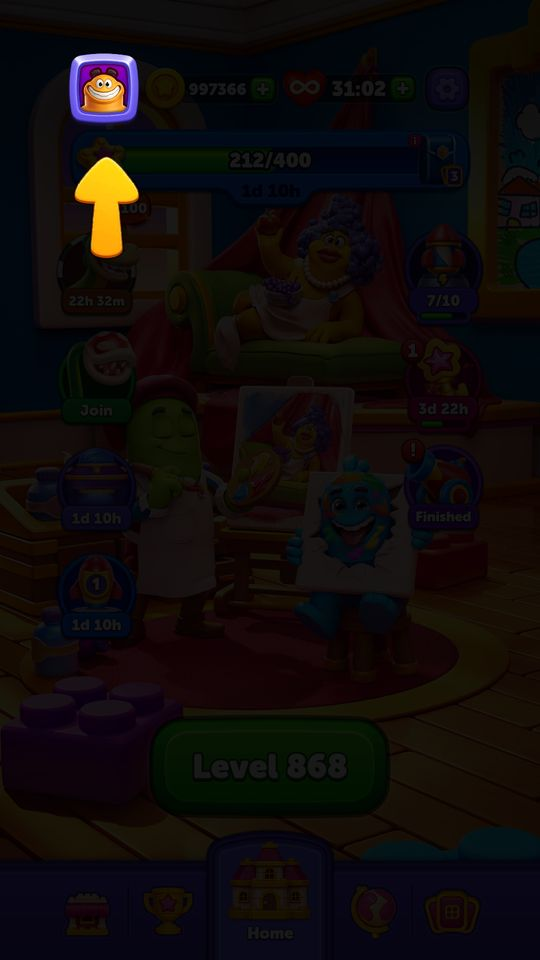
Ép đặt tên: mũi tên chỉ avatar - Enter NameNgười chơi Playtest“What is your name?” với ô nhập và bàn phím; có nút X để bỏ qua (lần sau lại bị ép).
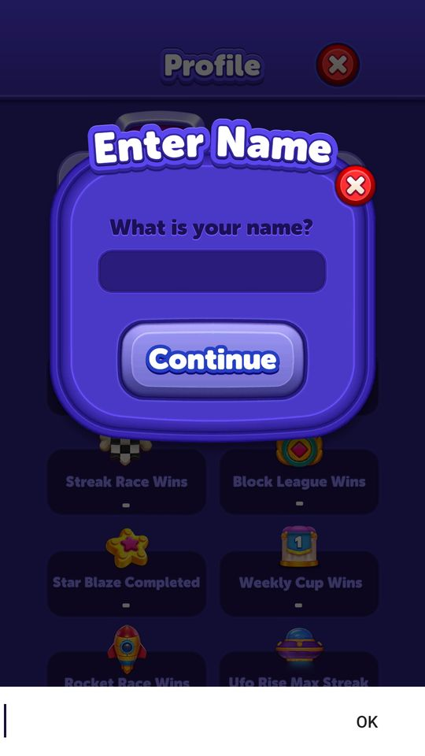
Enter Name - Edit ProfileNgười chơi PlaytestTab Avatar / Frame / Name / Token; ô khoá có biểu tượng nguồn (Block Pass). Save để lưu.
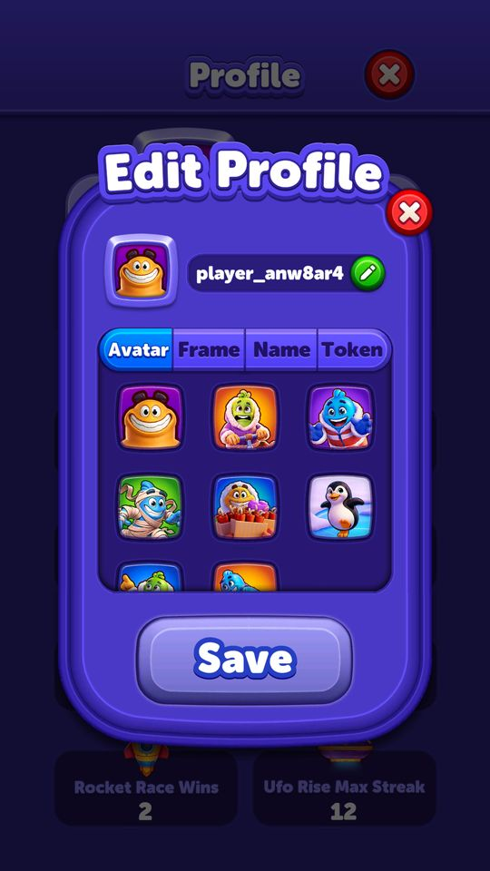
Tab Avatar 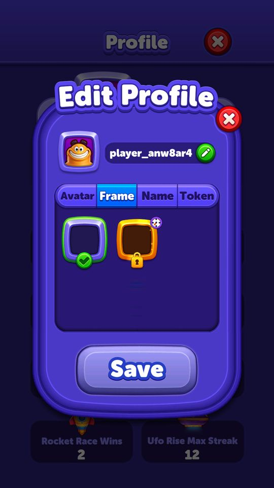
Tab Frame: khung pass khoá 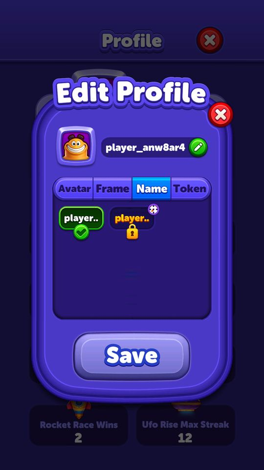
Tab Name: kiểu tên pass khoá 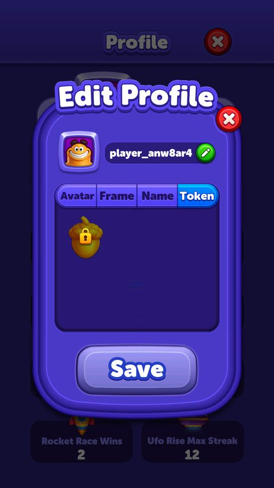
Tab Token: quả sồi - Trang thống kêGiao diện PlaytestLevel 868; First Try Wins 29, Lily Leap Wins 1, Rocket Race Wins 2, Ufo Rise Max Streak 12; các ô chưa có thì “-”.
- Trang trí trên bảng xếp hạngGiao diện PlaytestKhung, kiểu tên và token hiện cạnh tên ở World/Country/Weekly (fixture 13/10: Acorn Token cạnh avatar).
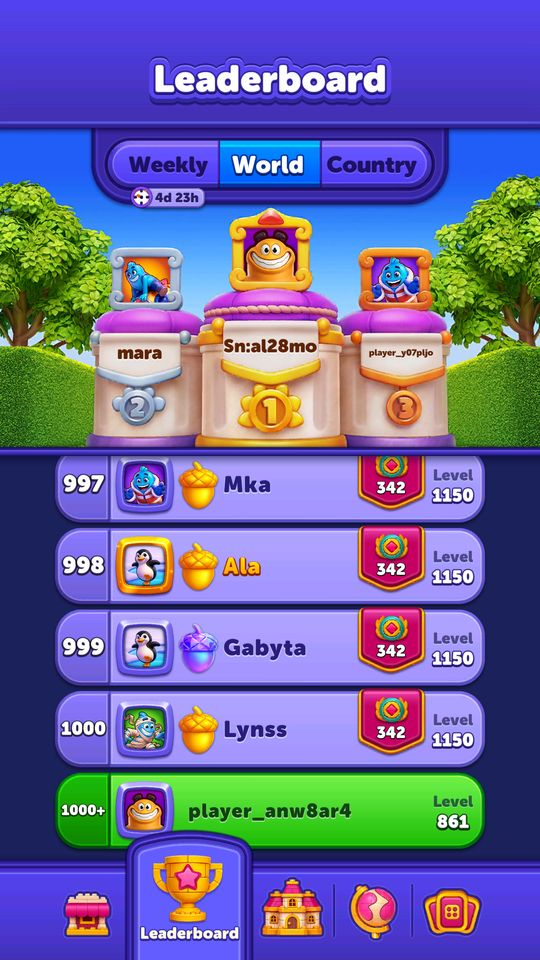
Trang trí trên bảng World 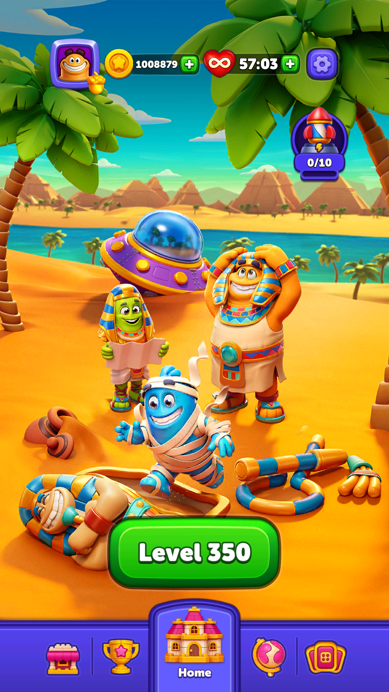
Fixture: Acorn Token


Nguồn trang trí
| Loại | Mặc định | Nguồn khác (quan sát) |
|---|---|---|
| Avatar | 8 nhân vật | ảnh Facebook (đang tắt) |
| Frame | khung xanh | Block Pass (magic_pass_frame) |
| Name | chữ trắng nền xanh | Block Pass (magic_pass_name_style) |
| Token | không | Nature Collection (Acorn), Grand Nature (token vàng) |
Vận dụng cho game khác
- Ép đặt tên bằng tutorial một bước (mũi tên chỉ avatar) chứ không popup cứng; vẫn cho bỏ qua nhưng sẽ nhắc lại. Tên thật làm bảng xếp hạng trông “có người”.
- Dùng trang Profile làm bảng thành tích sự kiện: mỗi sự kiện có một ô đếm, nên người chơi có thêm lý do để thắng sự kiện.
- Trang trí gắn với pass và album, và hiện trên mọi bảng xếp hạng. Đó là phần thưởng xã hội không ảnh hưởng kinh tế.
Bảng tổng hợp mọi tính năng đã làm chi tiết: BlockOut_ThietKeChiTiet.xlsx.
Còn thiếu / chưa xác minh
Mở khóa & điểm vào
Luôn có; đồ trang trí mở dần theo sự kiện. ProfileToken là một loại tiền tệ riêng (CurrencyType.ProfileToken = 15).
Điểm vào:
- Nút hồ sơ ở màn Home
- Bấm vào một dòng trong bảng xếp hạng
Cách hoạt động
- ProfileSpriteService (25 method) đọc ProfileSpriteConfig và phục vụ bốn nhóm: GetAllSprites / GetActiveSprite / FindSpriteById cho ảnh đại diện; GetAllFrames / GetActiveFrameId / GetActiveFrameInfo cho khung; GetAllNameStyles / GetActiveNameStyleId / GetActiveNameStyleInfo cho kiểu chữ; GetAllTokens / GetActiveTokenId / GetActiveTokenSprite / GetTokenSpriteById cho huy hiệu.
- Riêng ảnh Facebook đi đường khác: GetFacebookProfile / TryLoadFacebookPhoto / LoadProfilePhoto / DeleteProfilePhoto, có ProfileSpriteCacheService lo cache ảnh tải về.
- FindLeaderboardSpriteById là biến thể dùng cho bảng xếp hạng (có thể là bản ảnh nhỏ hơn).
- Đổi tên đi qua SyncService.ChangeProfileInfo(profileInfo).
Luồng chi tiết theo code
ProfileSpriteService (25 method) đọc ProfileSpriteConfig và phục vụ bốn nhóm: GetAllSprites / GetActiveSprite / FindSpriteById cho ảnh đại diện; GetAllFrames / GetActiveFrameId / GetActiveFrameInfo cho khung; GetAllNameStyles / GetActiveNameStyleId / GetActiveNameStyleInfo cho kiểu chữ; GetAllTokens / GetActiveTokenId / GetActiveTokenSprite / GetTokenSpriteById cho huy hiệu. Riêng ảnh Facebook đi đường khác: GetFacebookProfile / TryLoadFacebookPhoto / LoadProfilePhoto / DeleteProfilePhoto, có ProfileSpriteCacheService lo cache ảnh tải về. FindLeaderboardSpriteById là biến thể dùng cho bảng xếp hạng (có thể là bản ảnh nhỏ hơn). Đổi tên đi qua SyncService.ChangeProfileInfo(profileInfo).
Ảnh chụp màn hình (5)
5 ảnh chụp trong game (LDPlayer, bản 1006, tài khoản thử level 320 → 350 (07/10/2026)). Bấm ảnh để phóng to; nhãn UC dẫn tới use case tương ứng.

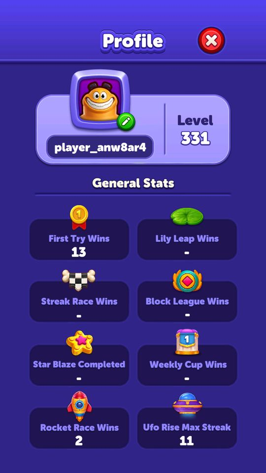

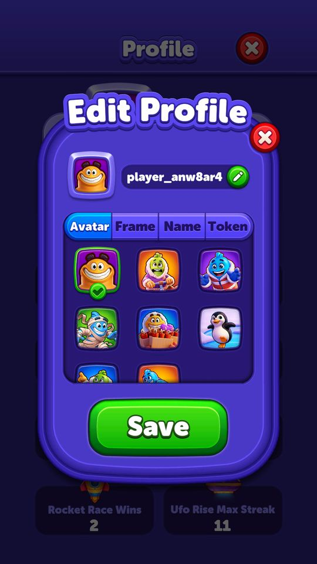

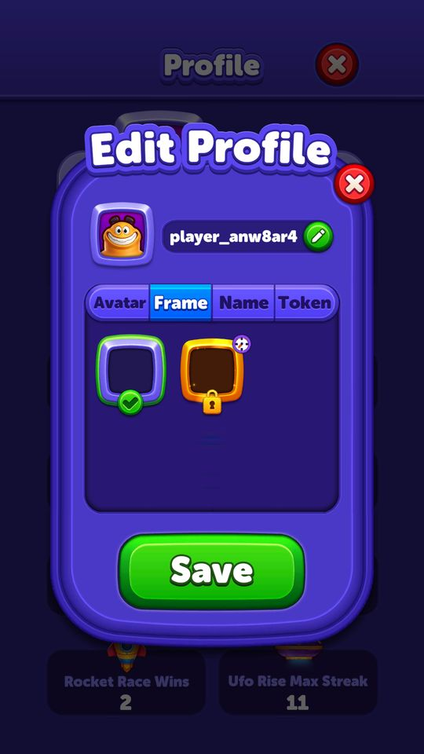

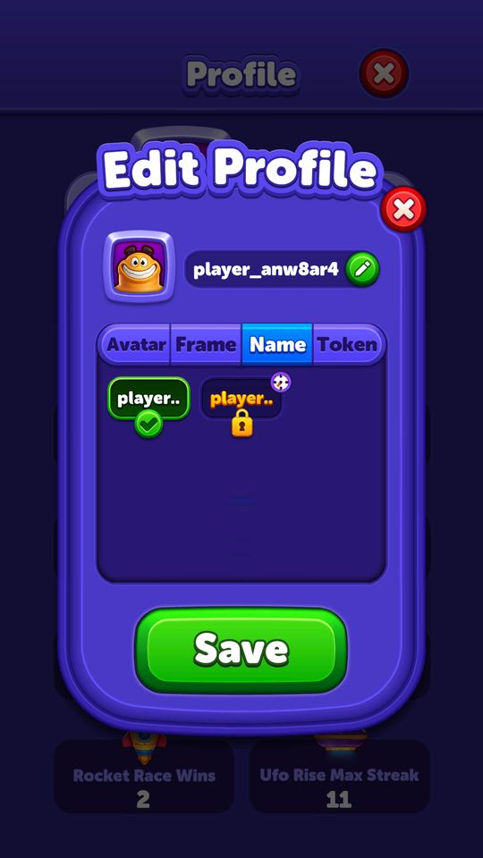

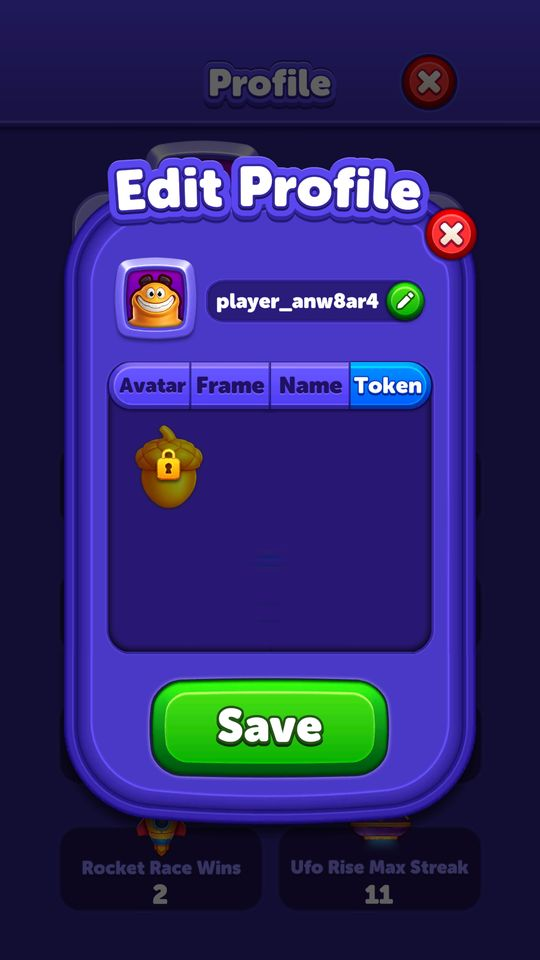
Số liệu chính
| Chỉ số | Giá trị | Nguồn |
|---|---|---|
| Huy hiệu hồ sơ là một loại tiền tệ trong kho | 15 | CurrencyType.ProfileToken — enum CurrencyType |
Use case (4)
Bấm vào từng use case để mở. Mở/đóng tất cả
UC-01 Đổi ảnh đại diện
Các bước- GetAllSprites() liệt kê ảnh đã mở
- Chọn -> GetActiveProfileId() cập nhật
- SaveProfileButtonHandler lưu
| Actor | Player |
|---|---|
| Trigger | Chọn ảnh trong hồ sơ |
| Điều kiện | - |
| Kết quả | Ảnh hiện trên hồ sơ và bảng xếp hạng |
| Quy tắc / số liệu | - |
| Evidence | ProfileSpriteService.GetAllSprites; GetActiveProfileId; SaveProfileButtonHandler |
UC-02 Dùng ảnh Facebook làm đại diện
Các bước- TryLoadFacebookPhoto() tải ảnh từ URL Facebook trả về
- ProfileSpriteCacheService cache lại
- GetFacebookProfile() trả sprite
- Huỷ liên kết -> DeleteProfilePhoto()
| Actor | Player |
|---|---|
| Trigger | Liên kết Facebook |
| Điều kiện | isFacebookSignInEnabled |
| Kết quả | Ảnh thật thay cho ảnh mặc định |
| Quy tắc / số liệu | Server đang tắt đăng nhập Facebook (rootLevelConfigModel.isFacebookSignInEnabled = false), khớp với việc không mục nào trong 2.000 mục bảng xếp hạng có imageUrl |
| Evidence | ProfileSpriteService.TryLoadFacebookPhoto; GetFacebookProfile; DeleteProfilePhoto; rootLevelConfigModel |
UC-03 Bị ép đổi tên
Các bước- SyncService.ShouldShowForceProfileNameChange() trả true
- IsNameChanged() và IsNameChangeClicked() kiểm tra đã đổi chưa
- SetInForceNameChangeState(true) mở popup bắt đổi
- IncreaseProfileNameChangeForceCount() đếm số lần ép
- Đổi xong -> ChangeProfileInfo(profileInfo) gửi lên server
| Actor | System |
|---|---|
| Trigger | Đạt màn 18 |
| Điều kiện | rootLevelConfigModel.isForcedNamePopupEnabled = true |
| Kết quả | Người chơi có tên riêng thay vì player_xxxxxxx |
| Quy tắc / số liệu | Server bật tính năng này, mốc forceNameChangeLevel = 18. Đối chiếu với dữ liệu thật: 272/1.000 mục bảng thế giới vẫn dùng tên mặc định, tức khoảng 27% người chơi top đã bỏ qua hoặc chưa tới mốc |
| Evidence | SyncService.ShouldShowForceProfileNameChange; SetInForceNameChangeState; const _profileNameChangeForceCountKey; rootLevelConfigModel.forceNameChangeLevel |
UC-04 Nhắc mở hồ sơ
Các bước- ShouldShowProfileAlertView() bật chấm đỏ
- ShouldShowProfileFingerView() hiện bàn tay chỉ
- MarkProfileOpened() tắt sau khi mở
| Actor | System |
|---|---|
| Trigger | Chưa từng mở hồ sơ |
| Điều kiện | - |
| Kết quả | Dẫn người chơi vào hồ sơ |
| Quy tắc / số liệu | - |
| Evidence | SyncService.ShouldShowProfileAlertView; ShouldShowProfileFingerView; MarkProfileOpened |
Cấu hình (2)
Gộp mọi nguồn: const trong code, JSON mặc định trong Resources, bảng static, storage key, AB test, cờ server.
| Nguồn | Key | Kiểu | Giá trị | Ý nghĩa | Nơi định nghĩa |
|---|---|---|---|---|---|
| code const | SyncService._profileNameChangeClickedKey / _profileNameChangeForceCountKey | string | ProfileNameChangeClicked / ProfileNameChangeForceCount | Khoá lưu trạng thái ép đổi tên | SyncService (const) |
| code const | CurrencyType.ProfileToken | enum | 15 | Huy hiệu hồ sơ là một loại tiền tệ trong kho | enum CurrencyType |
Backend / server
| Command | Chiều | Mục đích |
|---|---|---|
ChangeUserPlayerProfileRequest | client→server | đổi tên và đồ trang trí hồ sơ |
Giao diện (UI)
| Element | Class | Mục đích |
|---|---|---|
| Màn hình hồ sơ | Modules.Contexts.Home.Profile.Scripts.ProfileScrollController | cuộn chọn đồ trang trí |
Storage keys
ProfileNameChangeClicked ProfileNameChangeForceCount
Chưa đọc được / ghi chú
- Danh sách đầy đủ ảnh/khung/kiểu chữ/huy hiệu nằm trong ProfileSpriteConfig (ScriptableObject) — đã export ra project nhưng chưa trích thành bảng.
Tính năng liên quan
Bảng xếp hạng thường trực (thế giới / quốc gia) Đăng nhập Facebook / Apple Nature Collection (album thẻ) Block Pass (battle pass)
Nguồn đã đọc
- PseudoC/.../Home/Profile/Scripts/ProfileSpriteService.c
- PseudoC/.../Application/ServerCommunication/Scripts/SyncService.c